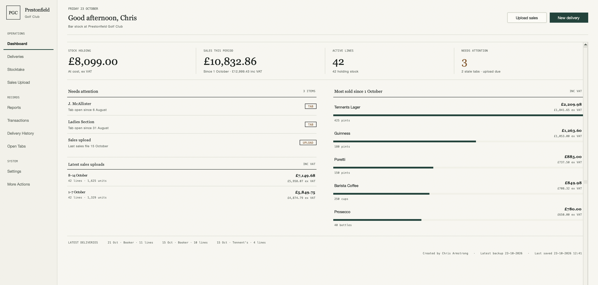
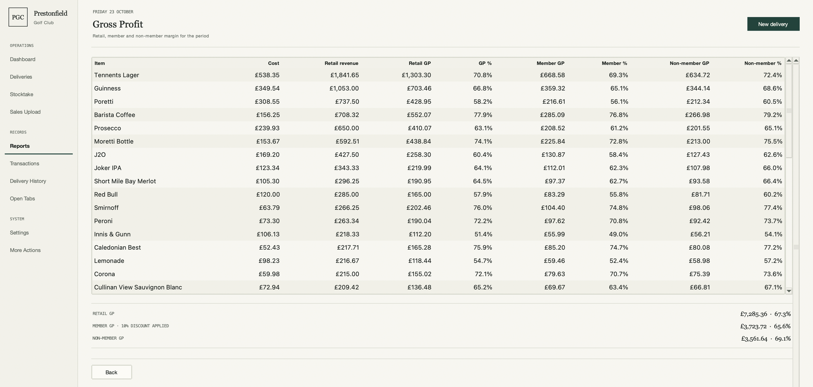

The bar ledger your committee can trust — stocktakes, sales, gross profit, order sheets and backups in one Mac app.
Most club bars run on three things that never quite meet: an EPOS report, a paper count sheet and a spreadsheet. BarStock puts all three in one place, and keeps the history when products or staff change.
We ran out of Tennents on Saturday night.
Stock and negatives are flagged after every upload, so the order goes in before the busy night, not after it.
Stocktakes take hours and never match the till.
Expected stock is built from deliveries, sales, waste and adjustments. The variance report values every difference in pounds.
I only know gross profit at month end.
Revenue, cost and margin update the moment the week's sales go in — ex VAT, with inc-VAT totals shown alongside.
Ordering means scrolling through a spreadsheet.
Order sheets are produced by supplier and product type, with count and order columns ready for the pen.
Full or partial counts, variance at cost, and a running surplus or shortfall across every count so a one-off counting error does not flatter the picture.
Drop in the weekly EPOS CSV. Pints, half pints, shandies and TG lines deduct from the right parent stock. Duplicate files are caught before they double-count.
Every supplier line is logged with quantity, unit cost and date. Stock updates immediately; invoice lines are matched to the products you carry.
Upload a Booker or supplier invoice and compare its prices with the costs in the system. Apply the changes in bulk, or lock a price you want kept.
Printable sheets grouped by supplier and product type, with count and order columns. Delisted lines stay off the sheet but keep their history in the reports.
Member tabs and function tabs are held open until paid or written off, and still record the drinks issued against real stock.
A backup is taken daily, and before every sales upload, baseline reset and restore. Any of them can be restored from inside the app.
Chalk paper, bottle green and copper, with serif figures and ruled tables. Committee reports print in the same style as the screen.
| Report | What it settles |
|---|---|
| Comprehensive | Opening stock, sales, deliveries, waste, closing stock and GP per line, with stock value and margin. |
| Division | Draught, bottled beer, wine, spirits, soft drinks and hot drinks — each with sales, cost, GP and stock. |
| Surplus / shortfall | Counted against expected stock, valued at cost, and the running position over every stocktake. |
| Draught yield | Pints sold against kegs delivered, so a line that is pouring badly shows up early. |
| Price history | Every cost and sell price change with its date and reason. |
| Audit | Data checks that catch a mismatched stock figure before the committee sees it. |
The dashboard opens on the four figures that matter, then the lines that need chasing and what is selling. The reports use the same ruled ledger, so the screen and the committee pack read alike. The figures below are illustrative.


Stocktakes went from a three-hour job at month end to something the bar manager does in twenty minutes every week. We actually trust the numbers now.Committee member · Prestonfield Golf Club
Before BarStock the club paid an external stocktaker £140 every six weeks — over £1,200 a year — and the answer only arrived after the count. The cost is gone; the stock and GP figures are live all year, and the same product list, prices and history stay with the club if staff change.
Every line you carry, with its measure, category and division, entered from your stock sheet — including the half-pint and shandy versions of each draught.
Your till's product names mapped to stock items, so the weekly export deducts the right product even when the spelling differs.
Cost and sell prices loaded from your latest invoices, with any price you want held locked against future invoice updates.
A stocktake baseline, one sales upload and a walkthrough with the bar manager — enough to see the reports with your own numbers.
Initial stock setup is included with every licence. No cloud subscription, no per-user charge, and no internet required after setup. BarStock runs on macOS (Apple Silicon and Intel), with all data in a local database on the club's Mac.